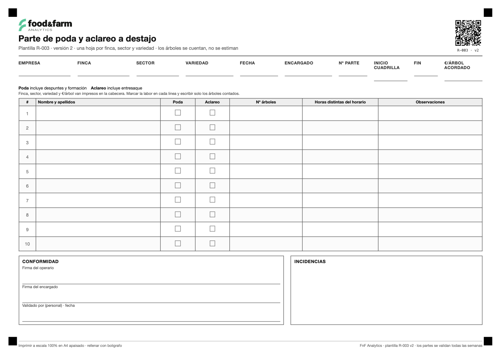

Los árboles contados, que es el pago del destajo. El €/árbol va impreso en la cabecera.
La hoja

Cómo se imprime
- Abre el PDF y dale a imprimir.
- Escala 100 % y A4 apaisado: si el navegador reduce al 94 %, las casillas dejan de cuadrar.
- Márgenes del navegador a cero (la hoja ya trae los suyos) y papel mate.
- Se rellena con bolígrafo, no a lápiz.
Por qué esta hoja se puede leer con una foto
- Cuatro marcas en las esquinas: enderezan la foto, dan escala y corrigen la perspectiva.
- Un QR que identifica la hoja y su versión, para que el sistema sepa cuál es aunque cambie.
- Vocabulario cerrado: lo que se repite se marca en una casilla, no se escribe.
- Lo que ya se sabe, va impreso. Solo se escribe lo que no se puede saber antes: casillas y uno o dos números.
Es lo que permite mandar una foto del papel y que el parte entre en la aplicación sin teclearlo: app.fnfanalytics.com.
Buscado como
parte de poda a destajo, parte de aclareo